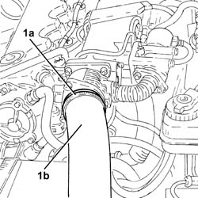
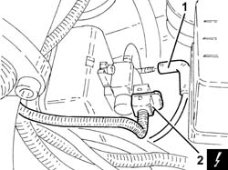
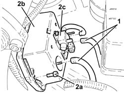
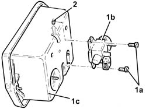
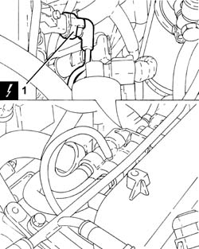
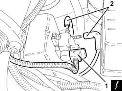
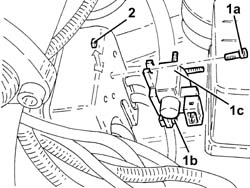
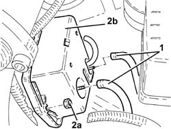
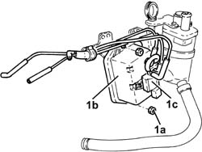
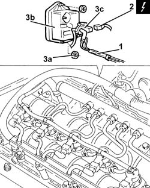

1060G70 vacum tank for controlling engine air intake r r
- Path
- Procedures > 10 ENGINE > 1060 DIESEL FUEL INJECTION > 1060G pressure pump electric control > 1060G70 vacum tank for controlling engine air intake r r
- Kind
- repair procedure (removal / refitting; the operation number is the code)
- Applies to
- engines: 1.9 JTD 8v , 1.9 JTD 16v, 2.4 JTD 10v, 2.4 JTD 20v; all production periods
- Interactive page
- https://sloeber94.github.io/elrnDB-a156/en/#/3237821
Applies to: engines: 1.9 JTD 8v ; all production periods; only with equipment: Euro 3
 Removing
Removing
 Refitting
RefittingEnsure that the ignition key is in the stop OFF, then disconnect the battery negative terminal.
 | Name | Connector |
|---|---|---|
- | Battery |
Proceed with the removal 1016A10 sound-proofing cover - r + r .
1. Loosen band (1a) and disconnect the air delivery sleeve from heat exchanger to intake manifold (1b), throttle body connector side.

Applies to: engines: 1.9 JTD 8v ; all production periods; only with equipment: Euro 3
1. Disconnect the vacuum pipe from the solenoid on the vacuum tank.
2. Disconnect the electrical connection from the solenoid on the vacuum tank.
| Name | Connector |
|---|---|---|
2 | Butterfly casing solenoid valve |

Applies to: engines: 1.9 JTD 8v ; all production periods; only with equipment: Euro 3
1. Disconnect the remaining vacuum pipes from the vacuum tank.
2. Undo bolts (2a) and remove vacuum tank (2b) complete with solenoid (2c).

Applies to: engines: 1.9 JTD 8v ; all production periods; only with equipment: Euro 3
1. Working at the bench, undo bolts (1a) and separate solenoid (1b) from the vacuum tank (1c).
2. Recover the solenoid retaining bolt pads.

Applies to: engines: 1.9 JTD 8v ; all production periods; only with equipment: Euro 3
Refitting
RemovingRefit the solenoid in its housing on the vacuum tank and secure with the bolts and pads.
Refit the vacuum tank complete with solenoid and secure with bolts.
Connect the vacuum pipes to the vacuum tank.
Connect the electrical connection to the solenoid on the vacuum tank.
Connect the vacuum pipes to the solenoid on the vacuum tank.
Connect the air delivery sleeve from the heat exchanger to the intake manifold, throttle body connector side, and secure with a band.
Proceed with the refitting 1016A10 sound-proofing cover - r + r .
Connect the battery terminal (-).
Applies to: engines: 2.4 JTD 10v; all production periods; only with equipment: Euro 3
Removing
RefittingEnsure that the ignition key is in the stop OFF, then disconnect the battery negative terminal.
| Name | Connector |
|---|---|---|
- | Battery |
Proceed with the removal 1016A10 sound-proofing cover - r + r .
1. Disconnect the electrical connection from the excess pressure sensor.
| Name | Connector |
|---|---|---|
1 | Turbocharging sensor |

Applies to: engines: 2.4 JTD 10v; all production periods; only with equipment: Euro 3
1. Disconnect the electrical connection from the solenoid on the vacuum tank.
| Name | Connector |
|---|---|---|
1 | Butterfly casing solenoid valve |
2. Disconnect the pipes from the solenoid on the vacuum reservoir.

Applies to: engines: 2.4 JTD 10v; all production periods; only with equipment: Euro 3
1. Undo the top bolt (1a), slacken the bottom bolt (1b), then withdraw and remove the solenoid on the vacuum reservoir (1c) complete with lower bolt pad.
2. Recover the upper bolt pad.

Applies to: engines: 2.4 JTD 10v; all production periods; only with equipment: Euro 3
1. Disconnect the vacuum pipes from the vacuum reservoir.
2. Undo the nuts (2a) and remove the vacuum reservoir (2b).

Applies to: engines: 2.4 JTD 10v; all production periods; only with equipment: Euro 3
Refitting
RemovingRefit the vacuum reservoir in its seating and fix it with the nuts.
Connect the vacuum pipes to the vacuum reservoir.
Refit the solenoid to the vacuum tank for the throttle body pneumatic valve and secure with the bolts and pads.
Connect the pipes to the solenoid on the vacuum reservoir.
Connect the electrical connection to the solenoid on the vacuum tank.
Connect the electrical connection to the excess pressure sensor.
Proceed with the refitting 1016A10 sound-proofing cover - r + r .
Connect the battery terminal (-).
Applies to: engines: 1.9 JTD 16v; all production periods
Removing
RefittingPosition the vehicle on the ramp.
Proceed with removal 1016A10 sound-proofing cover - r + r .
Ensure that the ignition key is in the OFF position, then disconnect the negative battery terminal (-).
| Name | Connector |
|---|---|---|
- | Battery |
Proceed with removal 7055B54 under-engine guard - r r .
Proceed with removal 1044B10 fuel filter assembly - r + r or replace .
Proceed with removal 1080D34 engine oil vapour separator - r + r .
1. At the bench, undo the nuts (1a) and remove the vacuum reservoir (1b) complete with solenoid valve (1c) and pipes from the mounting bracket.

Applies to: engines: 1.9 JTD 16v; all production periods
Refitting
RemovingPlace the vacuum reservoir mounting bracket complete with solenoid valve and pipes back in its housing and secure it using the nuts.
Proceed with refitting 1080D34 engine oil vapour separator - r + r .
Proceed with refitting 1044B10 fuel filter assembly - r + r or replace .
Proceed with refitting 7055B54 under-engine guard - r r .
Connect the negative (-) battery terminal.
Proceed with refitting 1016A10 sound-proofing cover - r + r .
Remove the car from the ramps.
Applies to: engines: 2.4 JTD 20v; all production periods
Removing
RefittingEnsure that the ignition key is in OFF position, then disconnect the battery negative terminal (-).
| Name | Connector |
|---|---|---|
- | Battery |
Proceed with removal 1016A10 sound-proofing cover - r + r .
Proceed with removal 1060F50 fuel return manifold - r r .
1. Disconnect the vacuum pipe from the brake servo vacuum pipe, pneumatic valve on the throttle body and rigid section connected to the variable geometry solenoid.
2. Disconnect the electrical connection from the solenoid on the vacuum tank.
| Name | Connector |
|---|---|---|
2 | Butterfly casing solenoid valve |
Release the vacuum pipes from the fastening bands.
3. Undo the nuts (3a) and remove the vacuum reservoir (3b) complete with solenoid valve (3c).

Applies to: engines: 2.4 JTD 20v; all production periods
Refitting
RemovingPlace the vacuum reservoir mounting bracket complete with solenoid valve back in its housing and secure it using the nuts.
Secure the vacuum pipes with the retaining bands.
Connect the electrical connection to the solenoid on the vacuum tank.
Connect the vacuum pipe to the brake servo vacuum pipe, to the pneumatic valve on the throttle body and rigid section connected to the variable geometry solenoid.
Proceed with refitting 1060F50 fuel return manifold - r r .
Proceed with refitting 1016A10 sound-proofing cover - r + r .
Connect the negative (-) battery terminal.
Topics linked from this page (8)
- 1016A10 sound-proofing cover - r + r
- 1044B10 fuel filter assembly - r + r or replace
- 1060F50 fuel return manifold - r r
- 1080D34 engine oil vapour separator - r + r
- 7055B54 under-engine guard - r r
- A1B Battery ( BATTERY NEGATIVE )
- K82 Turbocharging sensor
- L62 Butterfly casing solenoid valve ( ENGINE )
Topics that link to this page (8)
- 1060E40 supplementary pressure pump - r r
- 1060G72 solenoid on vacuum tank for throttle body pneumatic valve r r
- 1072B10 inlet manifold - r + r and replace seal
- 1080D34 engine oil vapour separator - r + r
- 4130B20 power steering pump r r
- 4130B32 power steering pump mount - r r
- 4130B34 supply pipe from fluid resevior to power steering pump r r
- 4130B40 outlet pipe from pump to power steering case r r